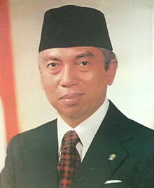

Prestasi Periode Masa Pemerintahan Soeharto
Adam Malik
- Berperan dalam diplomasi luar negeri, termasuk menjadi salah satu pendiri ASEAN pada tahun 1967.
- Berhasil membawa Indonesia kembali ke PBB setelah keluar pada masa Soekarno.

Soeharto
- Menstabilkan ekonomi Indonesia melalui program Repelita (Rencana Pembangunan Lima Tahun).
- Meningkatkan produksi pertanian hingga mencapai swasembada beras pada 1984.
- Membangun infrastruktur besar-besaran seperti jalan tol, bendungan, dan proyek listrik.